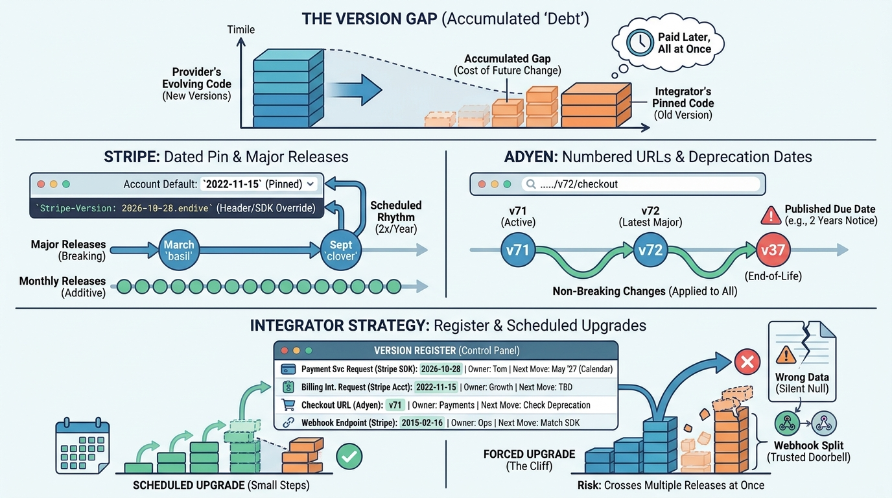

Part IV — INTERFACE: The API as the Product
Changing the API Without Breaking a Million Integrations: Versioning
AI-assisted: researched and written with Claude Code; illustrations generated with Gemini. How this works

Image generated by Google Gemini (gemini-3-pro-image-preview)